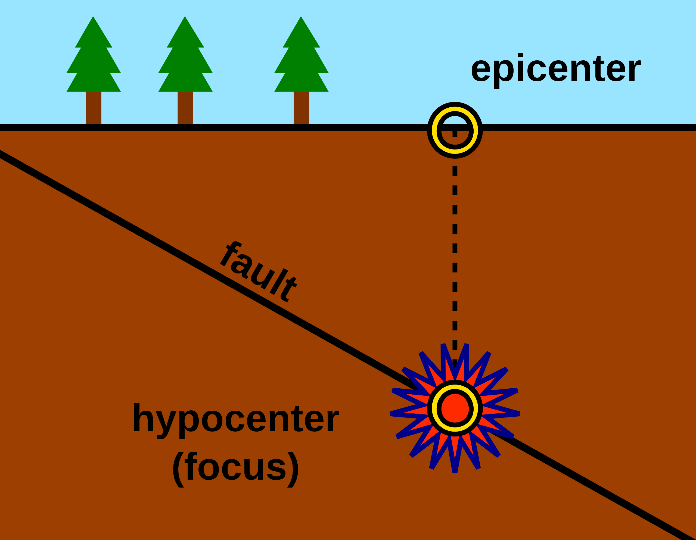
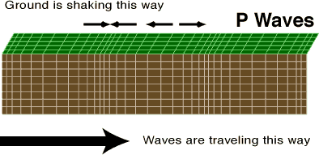
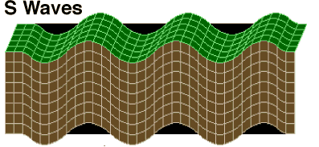
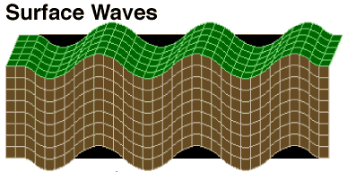
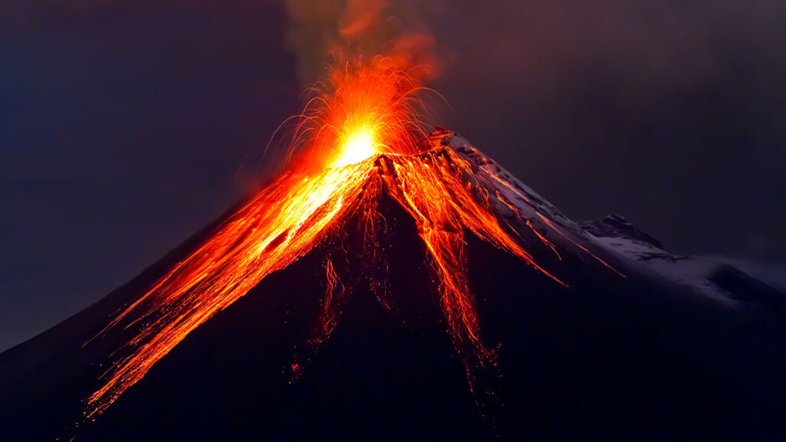
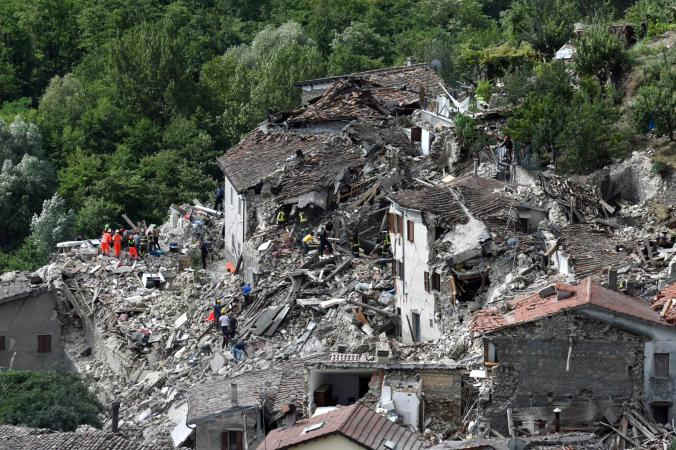
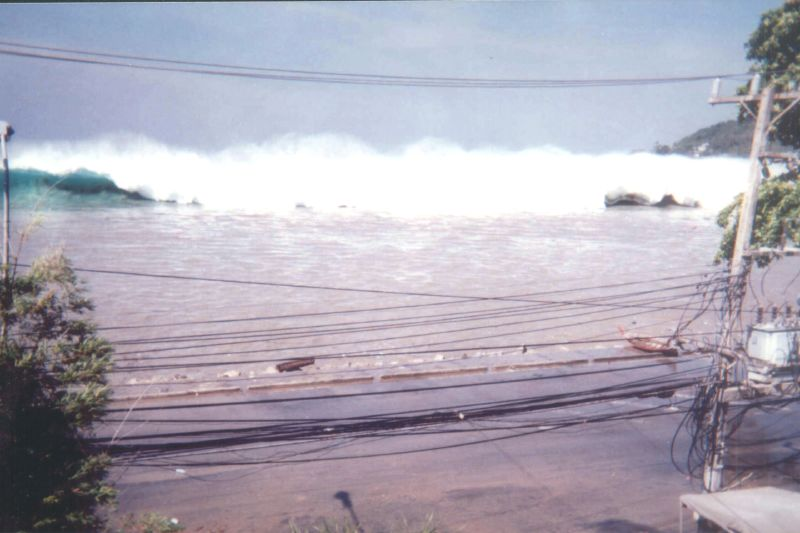

An Earthquake is a sudden shaking and
trembling of the Earth. This shaking and trembling causes the
movement of a series of shock waves on the earth's surface. Earthquakes
are caused by the sudden breaking and movement of the tectonic plates of
the earth's rocky outermost crust. Earthquakes typically occur on plate
boundaries. Earthquakes are unpredictable and hence can cause huge disasters.
Some important Terminologies related to Earthquakes:
1. Epicentre: The Epicentre of an earthquake is the location
on the earth’s surface where the damage from an earthquake is the
maximum.
2. Focus: The point of origin of an earthquake is its Focus.

3. Seismic Waves:
An earthquake results in a series of shock waves on the earth’s surface.
These shock waves are called Seismic Waves.
A Seismograph records the vibrations of the seismic waves
caused by an earthquake.
There are three types of earthquake waves or seismic waves.
- P waves or Longitudinal waves

- S waves or Transverse waves

- L waves or Surface waves

4. Magnitude of an Earthquake:
The Magnitude of an Earthquake is the measure of the size of the Seismic Waves generated by the Earthquake.
The Magnitude of an Earthquake is recorded by Seismograph on a scale called Richter Scale.
The following are the major causes of an Earthquake:-
1. Tectonic Movements:
The Earth's Crust is made up of Tectonic Plates. These Tectonic plates are constantly moving.As the edges of these plates slide against each other in fault zones, friction can slow them down, leading to the buildup of pressure over long periods of time. When the force of movement finally overcomes the friction, sections of the crust suddenly break or become displaced, releasing the pent-up pressure in the form of seismic waves. This is a naturally occurring earthquake, sometimes referred to as a Tectonic Earthquakes.
This is the most famous cause of Earthquakes on the Earth.
2. Volcanism:
Sometimes, Earthquakes occur in conjunction with Volcanic activities. These types of Earthquakes occur in Volcanism prone areas.

3. Explosions:
Sometimes, the underground explosions of many nuclear or chemical devices also causes Earthquakes. These Earthquakes, in most of the cases are caused by humans.
4. Collapse of Sructures:
Sometimes, Smaller-scale earthquakes result from the subterranean collapse of caverns or mines. These Earthquakes are rare and cause minimal damage.
Earthquakes, being an unpredictable natural disaster, can cause huge damage to life and property. The following are the major causes of an Earthquake:
1. Damage to buildings, monuments and other structures:
Because of the sudden movement in the Earth's surface, many buildings and other similar structures can't bear the shock. This results in cracks in the structures. If the magnitude of the Earthquake is higher, it may even cause the buildings to collapse. The collapse of these structures can also cause severe loss of life and property.

2. Tsunami:
In coastal areas, Earthquakes can also give rise to Tsunami. A Tsunami is a series of waves in a water body that can cause a sudden displacement of a huge volume of water.
A Tsunami is also very destructive and causes huge loss to life and property.

As we know that Earthquake can't be predicted, there are no ways to prevent it. But, we can follow some safety measures to be safe from an earthquake when it hits.
1. Drop, Cover and Hold on:
As soon as you feel an earthquake, drop yourself on the ground, and try to find a cover for yourself, maybe a under a table or kitchen platform. Hold on to that spot until the shaking and destruction stops.
2. If you are inside, stay there:
If you are inside your house or any other closed structure like office or school, try to follow the first step and stay inside until the shaking stops. If possible, try to move away from glass, hanging objects, shelves and cupboards, or any other object that is likely to fall and hit you.
If something such as a sheild or pillow is available nearby, try to cover your head with it, to protect yourself from falling debris, rocks, or glass.
3. If you are outside, stay outside:
If you are outside your house, stay outside. Just make sure that you don't stand near a high-rise building, a tree or any object that is likely to fall on you. Try to reach a plain area as soon as possible.
4. If you are in a moving vehicle, stop as quickly and safely as possible:
If you are in a moving vehicle, stop as soon as possible and stay inside. Do put the parking brake as it is possible for your vehicle to move due to the shaking.Turn on the radio for emergency broadcast information. When it is safe to begin driving again, watch for hazards created by the earthquake, such as breaks in the pavement, downed utility poles and wires, rising water levels, fallen overpasses, or collapsed bridges.